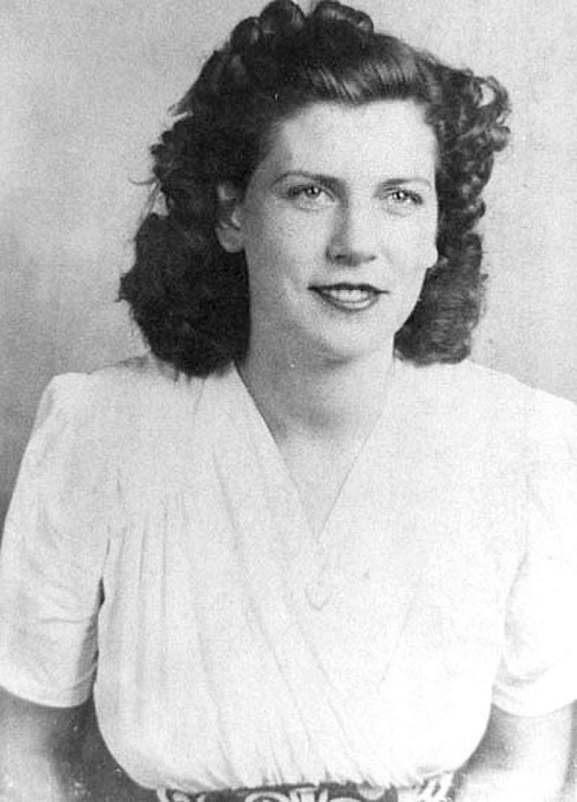
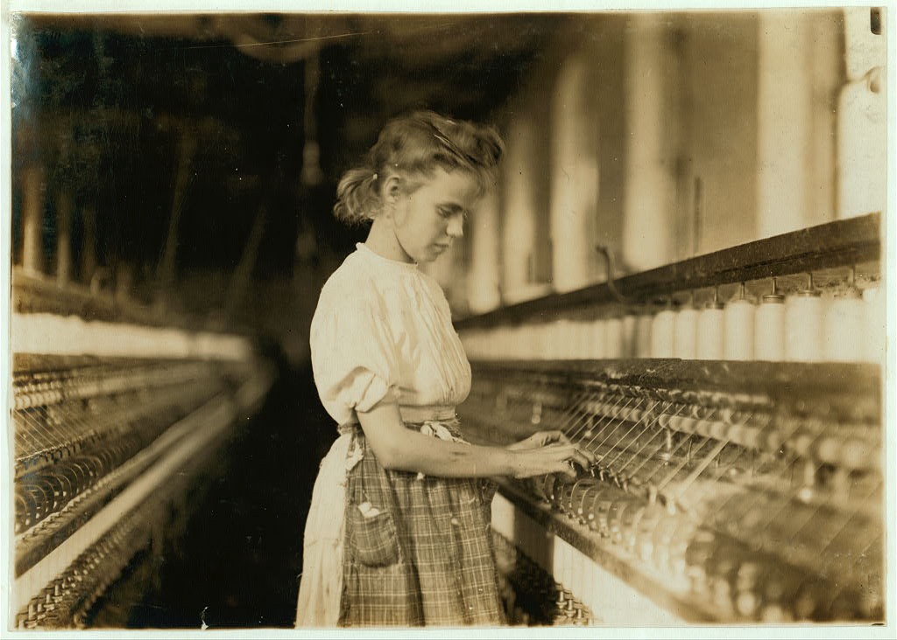

Biography
Margaret E. Knight, prolific American inventor of machines and mechanisms for a variety of industrial and everyday purposes.
Knight demonstrated a knack for tools and invention from an early age, and she was said to have contrived a safety device for controlling shuttles in powered textile looms when she was 12 years old. In 1868, at which time she was living in Springfield, Massachusetts, she invented an attachment for paper-bag-folding machines that allowed the production of square-bottomed bags. After working to improve her invention in Boston, she patented it in 1870. She later received patents for a dress and skirt shield (1883), a clasp for robes (1884), and a spit (1885). Later still she received six patents over a span of years for machines used in the manufacturing of shoes.
Other of Knight’s inventions included a numbering machine and a window frame and sash, both patented in 1894, and several devices relating to rotary engines, patented between 1902 and 1915. Although she was not the first woman to receive a patent, she was one of the most productive of female inventors, having some 27 patents to her credit. She failed to profit much from her work, however. When Knight died she was honoured in a local obituary as a “woman Edison.”
One of the best ways to improve men's behaviour is to enlighten their minds: and today, against the strong opposition of the Church and the Establishment, Scientific Humanism is attempting to do just that.
-Margaret E. Knight